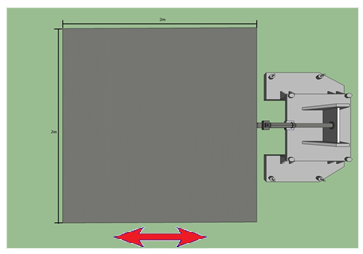
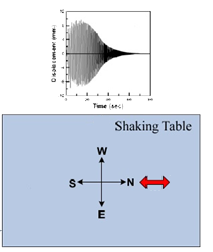

| 瀏覽人數： |
│材料及工具規則│結構模型製作規則│承受載重規則│結構模型安裝規則│評分規則│抗震測試程序│模型破壞準則
本競賽以此規則為依據，但若發生本規則無法涵蓋或產生疑義時，主辦單位保留最終解釋權。
- 材料及工具規則
- 參賽隊伍只能運用主辦單位所提供之材料來製作模型：
- 600 mm長，橫斷面為 6公厘 × 4公厘的木條
- A4影印紙張(規格80gsm)
- 棉繩
- PVC 熱熔膠和熱熔槍
- 正方形木板(用來作為模型底座，厚6mm，長寬各25cm)。底座木板必須保持實心，但為了模型架設上的需要，木板上最多可以鑽16個孔，每個孔的直徑不可超過 8mm。
- 剪刀
- 大型美工刀
- 線鋸
- 捲尺
- 8mm軸寬的鑽孔器
- 結構模型製作規則
圖一：典型的四樓層結構
模型，最上層為平面屋
頂，地面層即為木板底參賽模型的結構只要具備建築物的主要架構 (也就是骨架) 即可。不須加上外牆或裡面的樓梯(請見圖一)。參賽小隊可以自由設計模型的形狀，不過必須依照以下規則：
- 木板底座以上必須至少有3個平面樓層，支撐的方式可以自由設計。一個平頂可視為是一個樓層。(圖一)
- 比賽統一提供25x25cm2之木板底座，模型地基最小值為木板底座面積的70%，形狀與大小可任意設計。
- 每一層樓版面積僅能夠為地基面積的80%~120%內自由變動
- 每一樓層淨高(即該樓層頂部梁之下緣與其層底部梁之上緣的距離)至少須為15公分。
- 木板底座週邊的12mm內必須淨空，以方便模型可以利用螺絲固定在振動台上。
- 各樓層之樓地板面積定義為與柱相接之大梁所圍面積(計算至大梁外緣)，如圖之黑虛線所示範圍。 其中，大梁定義為兩端均須與柱相接的梁

- 地基示意圖 圖中紅色框框圍住之面積即為地基之面積(包含四個角落柱之截面積)

- 承受載重規則
- 模型中的每一樓層的每一平方公分必須能夠承受 10 公克的重量，模型必須能夠同時承受每一層樓所應承受的總重量。
- 每一個鐵塊是6.0x4.5x3.0cm3，重量為635公克。
- 每一層樓所需擺放之鐵塊數量計算方式請見下表，採絕對進位制。
- 結構模型安裝規則
結構模型經過裁判審核與稱重後，參賽隊伍需負責將結構模型安裝至振動台上，並利用熱熔膠將裁判規定之鐵塊數量固定於結構模型上。參賽隊伍需自行承擔鐵塊是否黏結牢固的責任。一旦結構模型稱重完畢後，除了固定鐵塊所需的熱熔膠之外，不允許增加任何其他的材料在結構模型上。另外鐵塊不得外露於結構模型，不得碰觸到樓版和梁以外之結構部分。
- 評分規則
本次比賽評分利用結構模型質量和通過之地震強度來決定，每次測試都是和通過測試中質量最輕的隊伍比較，四階段總得分為100分。如果一開始質量最輕的隊伍在某一階段的測試中崩毀了，在下個階段的測試中，質量最輕的隊伍將會變為通過該次測試中質量最輕者，冠軍為得分最高者，得分計算方式如下：
- 其中，
Ｓ：得分
Ｉ：結構模型通過之地震強度(gal)。
M ：結構模型之質量（不包含底版、質量塊）。
Mmin：所有參賽隊伍中通過該次測試後，結構模型質量最小者。 - 範例:
某參賽隊伍在審查時秤重得知模型質量為750克，而底板質量於賽前已秤重得知為275克，所以該參賽隊伍M為475克。400gal時Mmin為300克，600gal時Mmin為350克，800gal時Mmin為400克。此模型受地震測試通過了800gal的測驗，在1000gal時崩塌了。
該隊伍的模型抗震分數為分
(四捨五入取到小數點第二位)比賽排名依據此分數而定，如遇得分相同模型質量較小者勝出。 - 抗震測試程序
- 競賽將進行不同強度的抗震能力測試，依序為400 gal、600 gal、800 gal與1000 gal。
- 本系振動台為單軸向振動台，示意圖如下
- 模型安裝示意圖每一組分配到3600cm2的面積，將模型安裝於中央，每個模型相距35cm的安全距離，詳見圖四
- 模型破壞準則
- 模型任何一樓層發生不穩定或崩塌。
- 鐵塊脫離、掉落或發生劇烈晃動。
- 半數或半數以上柱子脫離底版。
- 其他經裁判認定為破壞者。
現場將準備以下工具以供參賽隊伍使用：
參賽小隊必須自備筆記本、鉛筆、橡皮擦、尺和計算機。模型製作過程中可能需要計算，鉛筆則可以在木板裁切和鑽孔的位置上作記號。
樓層 |
樓層面積 |
樓層承受重量 |
所需擺放鐵塊數量 |
鐵塊實際數量 |
2 |
100平方公分 |
1000克 |
1.57塊 |
2塊 |
3 |
200平方公分 |
2000克 |
3.15塊 |
4塊 |
4 |
300平方公分 |
3000克 |
4.72塊 |
5塊 |
|
|||||||||||
強度分數對應表 |
所有參賽模型將安裝在本系大型結構實驗室之振動台上進行模型抗震能力測試(圖二)，振動台產生人造地震將涵蓋各種頻率，每一次測試所產生的人工地震單向正弦波變頻運動，輸入之位移歷時及方向詳如圖三所示。人工地震之大小以該次測試歷時之加速度峰值(PGA)表示。因應本系震動台大小(3mx3m)及比賽公平性，避免比賽中各隊結構發生碰撞，每隊底板面積區域設定為為60x60cm2 且為求公平性所有隊伍須同時於震動台上進行測試，故一次只會進行25隊同時測試。
|  |  |
圖二：振動台上視圖、振動方向 | 圖三：輸入振波歷時 |
圖四：模型安裝示意圖 |